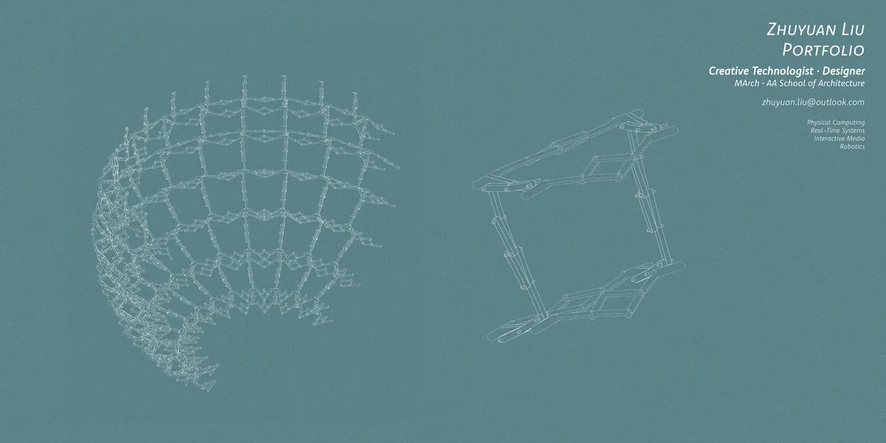
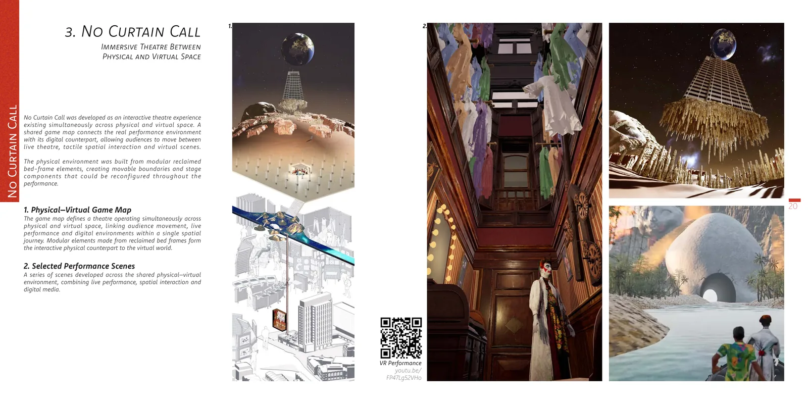
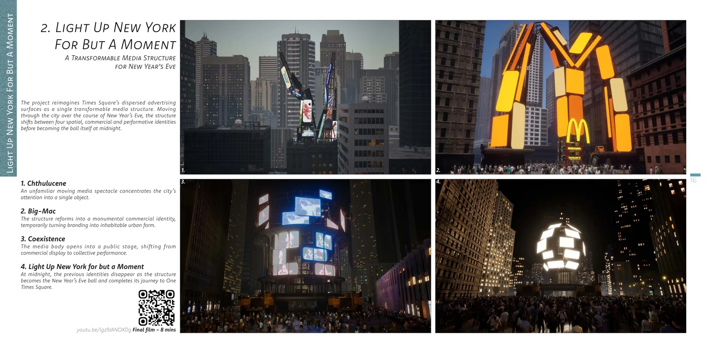
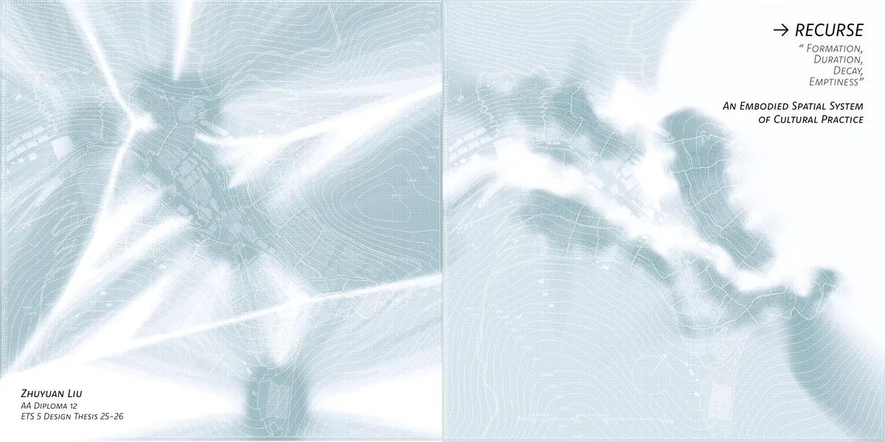
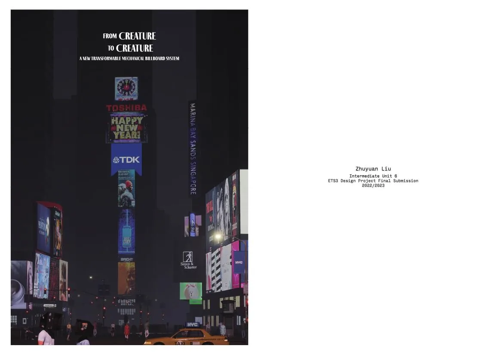

01
Sacred Intelligence
Remote rituals between physical and digital space, developed through robotics, gesture interaction, responsive media and operational 1:1 prototypes.
View project →Creative Technologist · Designer
I build physical–digital prototypes that turn speculative ideas into things that can be tested, observed and experienced.
Physical Computing · Real-Time Systems · Spatial Capture · Interactive Media · Robotics

Selected work
Projects move between digital systems and physical proof: building, testing and refining the mechanism as part of the design process.
01
Remote rituals between physical and digital space, developed through robotics, gesture interaction, responsive media and operational 1:1 prototypes.
View project →
02
An immersive theatre operating across physical and virtual space, combining VR, inertial motion capture, AprilTag object tracking and live performance.
View project →
03
A transformable media structure developed through cinematic visualisation, physical form studies and an Arduino-controlled kinetic prototype.
View project →Spatial capture & reconstruction
I use environmental capture as a spatial practice: recording places as three-dimensional data, inspecting those datasets, and translating them into navigable scenes, architectural reconstructions and digital-twin workflows.
04
Within Katla · Iceland
Environmental capture developed with Camille in Iceland. Spatial scanning is used to retain terrain, scale, atmosphere and continuity beyond conventional photographic documentation, turning field data into a navigable and reusable representation of place.
LiDAR and image-based field capture record geometry and spatial continuity as a three-dimensional dataset.
Gaussian Splatting provides a high-fidelity visual layer for reviewing, communicating and navigating captured environments.
Captured scenes become references for reconstruction, digital twins, spatial media, research and visual storytelling.
Sacred Intelligence · Tibet
Tibetan Buddhist structures were recorded as Gaussian-splat datasets, inspected through orthographic projections and translated into cleaner architectural representations. The scan remains evidence; the reconstructed model becomes an editable spatial interpretation.
Principal axes, silhouettes, height bands and repeated components are extracted from the capture and rebuilt as modular Rhino geometry, allowing visually rich scan data to support measurable and reusable spatial models.

LiDAR / image-based field capture.
Gaussian Splatting and 3D scene reconstruction.
PLY review, coordinates and orthographic projection.
Axes, levels, envelopes and repeated modules.
Rhino geometry calibrated against capture.
Digital twins, spatial media and documentation.
Working principle
Scan as evidence. Reconstruction as architectural interpretation.
Extended documentation
The selected portfolio is designed for a quick read. These books document the research, system development, technical testing and iteration behind two projects in full.

An Embodied Spatial System of Cultural Practice
Site simulation, system architecture, knowledge translation, robotic tool iterations, coding pipeline, practitioner feedback and architectural integration.
Open Full Book
A New Transformable Mechanical Billboard System
Billboard mechanisms, kinetic movement strategies, structural development, Arduino coding, dynamic feedback, power systems, hazards and physical models.
Open Full BookContact